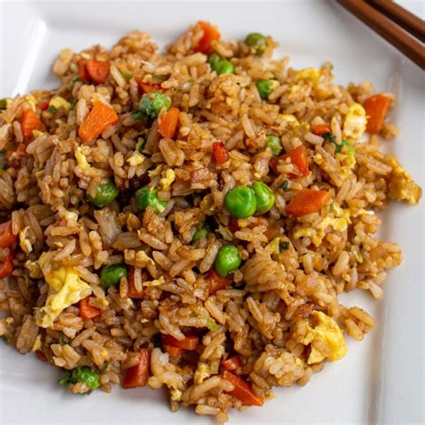

Fried Rice

An easy dish that requires a bit of preparation but still relatively cheap. Designed to make use of leftover rice and a lot of the ingredients are optional.
Ingredients
- 3 cups of Rice (leftover is preferred)
- 2 tomatoes
- 1 teaspoon of Salt
- 1 spoon of Soy Sauce
- 2 eggs
- Cooking Oil
- 3-5 cloves of Garlic
- 1 Onion
- 1 cup of sliced Cabbage
- Pepper
- 1-2 Calamansi
Steps:
-
Heat up cooking oil in the pan then sautee the garlic and onion. How they're sliced depends on you. Sautee till the garlic
is changing color and the onion is starting to become transparent.
-
Add the sliced tomatoes and let it sit until the tomatoes' structure starts to become soft. Make sure to mix every now and then.
Then add the sliced cabbage then mix again.
-
After cooking the cabbage, add the two eggs, wait for a bit until some of the eggs start to cook slightly, then add the rice in. Mix everything thoroughly.
-
Season everything with pepper and a pinch of salt. Then pour soy sauce in the side and let it caramelize. Sprinkle some calamansi juice as well. Then mix everything thoroughly.
Home